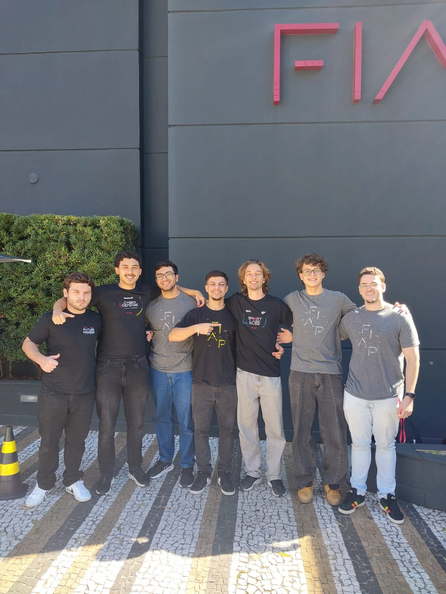
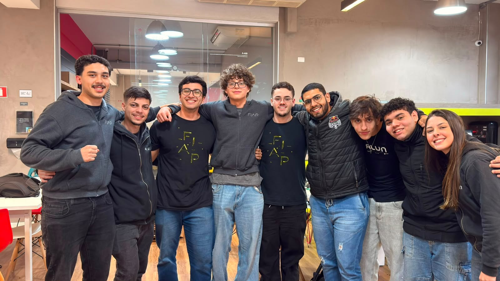
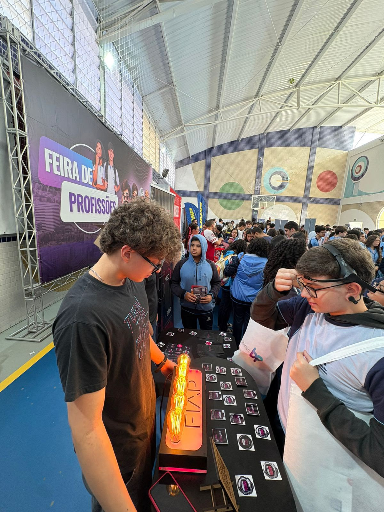
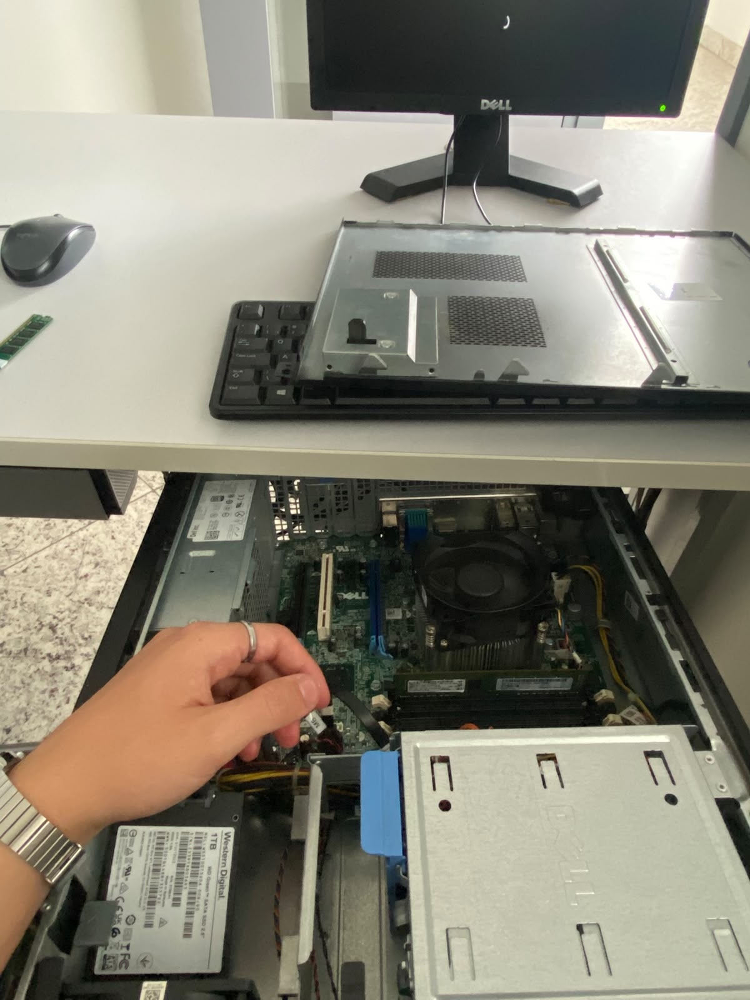
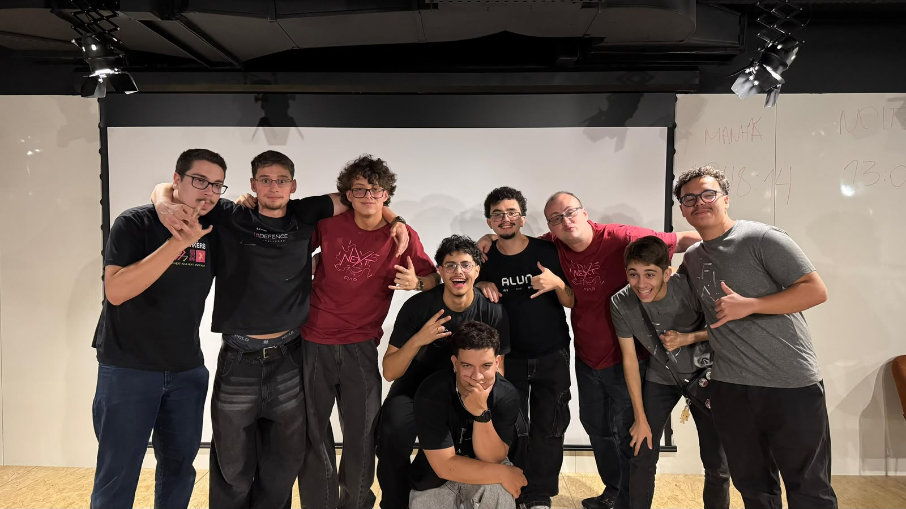

1º
Hackathon Estágio FIAP · 2026
Dashboard Inteligente de Chamados
Soluções e automações para o dia a dia operacional dos setores da FIAP. 1º lugar entre os estagiários.
Ver repositórioAnalista de Dados em formação
Transformo dados brutos em decisões claras. Trabalho com Python, SQL / NoSQL, Power BI e Databricks.

Tenho 18 anos e estudo Data Science na FIAP. Vim do ensino técnico em Informática, então programo e entendo de infraestrutura.
Hoje foco em todo o ciclo de dados: coletar, limpar, modelar, analisar e comunicar. Gosto de dashboards que qualquer pessoa entende.
Na monitoria de T.I. da FIAP aprendi a ouvir o problema antes de propor a solução. Levo isso para a análise de dados.
Exploração e estatística com Python.
Consultas SQL e NoSQL.
Dashboards no Power BI.
Spark no Databricks.
Repositórios reais do meu GitHub. Filtre por linguagem, por assunto ou busque por nome.
Buscando repositórios...
Soluções e automações para o dia a dia operacional dos setores da FIAP. 1º lugar entre os estagiários.
Ver repositórioStartup de inteligência emocional para jovens de 14 a 20 anos, com gamificação e personalização. 2º lugar entre todas as salas.
Ver repositórioPipeline ETL com 4,5 milhões de internações reais do SUS na Oracle Cloud. Consultas de minutos para milissegundos.
Ver repositórioMinha produção no GitHub é constante ou acontece em picos?
API pública do GitHub: a data de criação de cada repositório meu.
Contei os repositórios criados em cada mês, do primeiro até hoje.
Carregando dados...
Lendo o GitHub...
Suporte técnico em hardware, audiovisual e atendimento. De problemas de login a switches de rede em laboratórios.





Fev 2026 – Dez 2027
Ciclo completo de dados com visão estratégica: extração de insights, modelos preditivos e visualizações interativas. Machine Learning, Big Data, Business Intelligence e IA, com teoria e prática.
Fev 2023 – Dez 2025
Base em desenvolvimento de software, bancos de dados, manutenção de computadores e fundamentos de T.I.
Análise de dados, BI e projetos com Python e SQL. São Paulo, SP.
Procuro uma oportunidade de estágio em Dados. Me chame por qualquer canal.